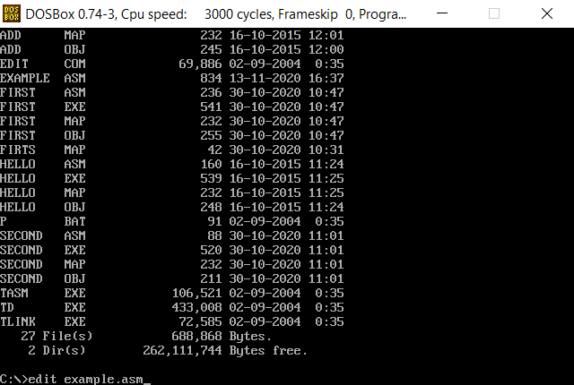
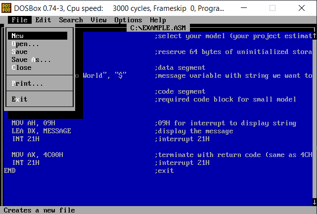
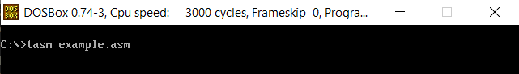
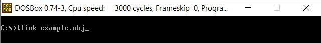
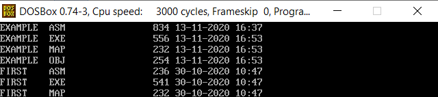
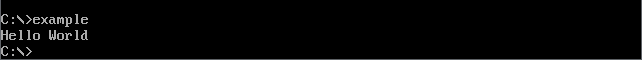

What is Assembly language?
Assembly Language is low-level programming language which is used to program computers. It’s depends on the machine code instructions, so
every assembly language is designed for exactly one specific computer architecture.
Assembly code is converted to executable machine code with an assembler. Computers will execute these machine codes to run our programs.
Some advantages of assembly language:
- Requires less memory and execution time
- Allows us to work with hardware specific jobs
Simple example to print “Hello World” in assembly
.MODEL SMALL ;select your model (your project estimated size)
.STACK 64 ;reserve 64 bytes of uninitialized storage
.DATA ;data segment
MESSAGE DB "Hello World", "$" ;message variable with string we want to print out
.CODE ;code segment
MOV AX, @DATA ;required code block for small model
MOV DS, AX
MOV AH, 09H ;09H for interrupt to display string
LEA DX, MESSAGE ;display the message
INT 21H ;interrupt 21H
MOV AX, 4C00H ;terminate with return code (same as 4CH)
INT 21H ;interrupt 21H
END ;exit
Now we have to setup some sort of code enviorement to run this code. I’d like to go with DOSBox. Visit dosbox.com to download latest version. And then we need to install assembler, for this I prefer Turbo Assembler (TASM).
For more detailed enviorement setup guide you can visit this blog post.
To run the program open your DOSBox and type edit example.asm. With this command emulator will open it’s code editor. In here you can write your code. When you feel ready you can go top left and click to save and then click exit.


After all we have to convert our code into machine code, in enviorement setup we installed TASM to do that.
In terminal type tasm example.asm. With this command your asm file will be converted into obj file.

After we can run tlink example.obj to make it executable.

Now if you run dir command you should see your example.exe file.

To run that just type example and there we go, we have our “Hello World” printed.
